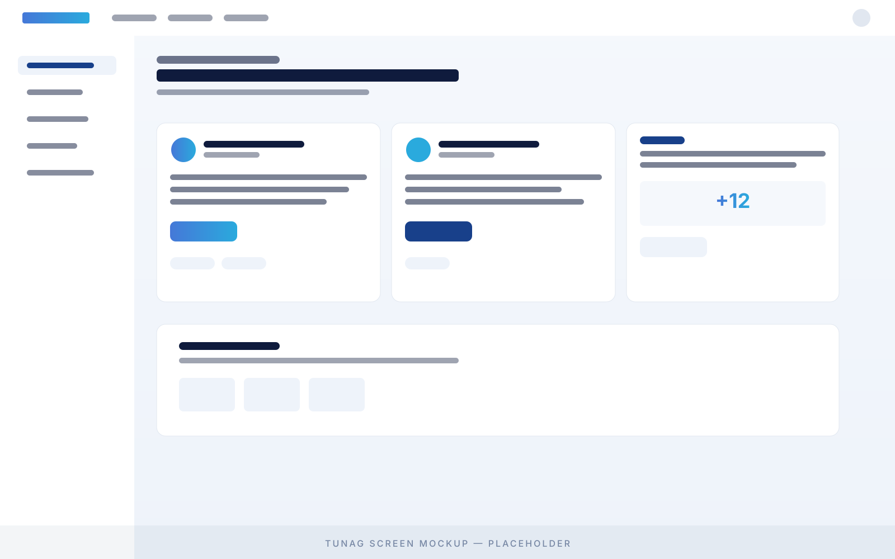

Recognition / Engagement
エンゲージメント向上サンクスカード制度
日常的な感謝を可視化し、横の称賛を文化として根付かせる取り組み。スタンプ感覚で送れる気軽さと、贈った内容が全員の目に触れる透明性のバランスが、組織への定着を左右します。
Overview
取り組みの概要
サンクスカード制度は、社員同士が「ありがとう」を可視化された形で送り合う仕組みです。口頭の感謝はその場で消えてしまいますが、テキストやスタンプの形に残すことで、本人が後から見返せるだけでなく、周囲の社員にも「誰がどんな働きで感謝されているのか」が伝わります。これが、表彰イベント以外の場で日常的に称賛が循環する基盤になります。
運用にあたっては、毎日数十枚〜数百枚が流通する規模を初期から想定する必要があります。月に数枚しか送られない仕組みは、ほぼ確実に半年以内に止まります。送る側のハードルを徹底的に下げ、文章ではなくひとこと・スタンプ・絵文字でも成立するように設計するのが定着のコツです。「ちゃんとした文章を書こう」と思わせた瞬間に、流通量は1/10になります。
受け取った側の体験設計も重要です。サンクスカードは届いた瞬間の温度感が一番高く、そこを逃すと感情が冷めてしまいます。プッシュ通知を含めた即時性のある通知設計と、受け取ったサンクスカードを後からまとめて見返せる「マイページ」的なアーカイブ機能の両立が求められます。TUNAG上では、これら一連の体験を専用機能として標準提供しているため、独自開発の必要はありません。
月次・四半期で「組織のつながりマップ」として可視化することで、人事側の運用価値も生まれます。誰から誰に多く贈られているか、特定部門だけで内輪化していないかなど、組織のコミュニケーション偏りが定量的に把握できます。退職予兆や部門間の溝の早期検知にもつながる、副次的な効用が大きい施策です。
制度を導入する前は、感謝を伝える機会が偶発的でした。仕組みにしたことで、毎日見える形になり、特に他部門の働きぶりが見えるようになったのが大きかったです。
人事部長 / 製造業 1,200名
TUNAG Screen
TUNAGでの実行イメージ
実際にTUNAG上で運用する場合の画面イメージです。送信フォーム・タイムライン・受信履歴の3つで構成されます。

Best Fit
こんな時におすすめ
以下のような状況にある組織で、特に成果が出やすい取り組みです。複数当てはまるほど効果が見込めます。
- 部門間の感謝が言語化されておらず、横の関係性が薄いと感じている。隣の部署が何をしているか、お互いに見えていない状態が続いている。
- 退職面談で「人間関係」「孤立感」を理由として挙げる社員が複数おり、エンゲージメントスコアの「同僚との関係」項目が低めに出ている。
- 年次表彰や四半期アワードのような大きなイベントだけでは、称賛が日常化しないと感じており、もっと頻度の高い称賛の仕組みを探している。
- 多拠点・リモートワーク中心で、対面で「ありがとう」を伝える機会が物理的に減っている。デジタル前提のコミュニケーション設計が必要になっている。
- 新入社員や中途入社者の早期離職が課題で、入社直後の関係性形成に時間がかかっていると感じている。
Pitfalls
失敗しやすいポイント
多くの組織でつまずきがちな3つのポイントです。事前に把握しておくと、立ち上げ後の停滞を回避できます。
-
3ヶ月で形骸化する
立ち上げ初月の盛り上がりが3ヶ月目で急激に落ちる現象が、ほぼすべての組織で起きます。原因は「最初の熱量を作った人が続かない」こと。仕組み側で持続性を担保しないと、人事の意思に依存した運用は必ず崩れます。
-
特定の人しか送らない
全社員に開放しても、実際に送るのは2割の社員に偏りがちです。残り8割が「読むだけ」になると、贈り手の意欲も削がれていきます。送るハードルの低さと、送る側へのリアクション設計の両方が必要です。
-
「ちゃんと書こう」が起きる
サンクスカードを「業務評価の一部」として扱った瞬間、社員は文章を吟味するようになり、流通量が劇的に減ります。評価とは切り離し、純粋な感謝の場として運用することが、量を保つ唯一の方法です。
Success Factors
成功させるために大事なこと
実際に効果を出している企業に共通する4つの要素です。順序にも意味があります。
-
経営層が最初の3週間、毎日送る
「これからサンクスカード制度を始めます」という号令だけでは、ほぼ確実に立ち上がりません。経営層・役員クラスが最初の3週間、毎日複数枚を送る姿を見せることで、初めて社員側に「これは本気の取り組みだ」という認識が生まれます。最初の流通量の8割は、この期間で形成されると考えてください。
-
送る側のハードルを徹底的に下げる
テキスト+スタンプ+絵文字の組み合わせで完結できるように設計します。「件名」「本文」「カテゴリ選択」のような項目を増やすほど、送られる枚数は減っていきます。極論、スタンプ1個でも成立する設計が、月間流通量を10倍以上に変えます。送信フォームを開いてから完了までの操作回数は3クリック以内が目安です。
-
受け取った側に通知が確実に届く
サンクスカードは届いた瞬間の温度感が最も高く、24時間後にはほぼ熱が冷めます。全員が日常的に開くチャネル(TUNAGのタイムラインやスマホ通知)に確実に届ける仕組みが必要です。メールだけの通知では、開封されないまま埋もれます。「気づける設計」と「あとから見返せる設計」を両立させてください。
-
月次で「贈り合いマップ」を可視化する
送信枚数の総数だけでなく、誰から誰に贈られているかを匿名で集計し、月次で全社共有します。これにより「組織のつながりがどこに偏っているか」が見え、次の打ち手につながります。可視化は社員側のモチベーションも高め、「自分の部署も贈り合いに参加しよう」という空気を生みます。データを取って終わりにせず、必ずフィードバックループに入れてください。
Get Started
この取り組みを、自社で動かしてみませんか?
30分のオンラインデモでは、貴社の状況に合わせて「サンクスカード制度」をどう実装し運用していくかをご案内します。